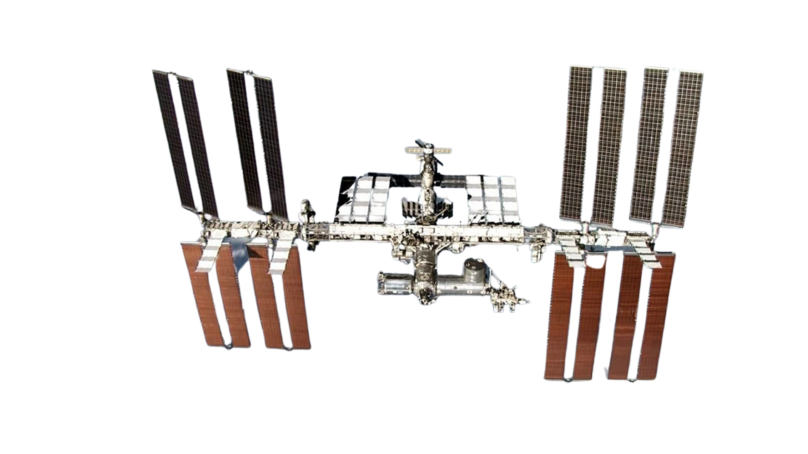

The International Space Station (ISS) is a multinational research laboratory orbiting Earth, where astronauts conduct experiments and study the effects of space travel. It symbolizes international cooperation and paves the way for future missions to the Moon and Mars.

Year: 1998
Example: Joint research projects among international partners
Description: Showcasing the success of international collaboration in space exploration and fostering diplomatic relations.
Year: 2000
Example: Repairing and maintaining external equipment
Description: Advancing techniques and tools for astronauts to perform maintenance and construction tasks outside the ISS.
Year: 2001
Example: Changes in bone density
Description: Studying the impact of extended periods in space on human bone health and developing countermeasures.
Year: 2001
Example: Monitoring climate patterns from space
Description: Collecting data on Earth's atmosphere, weather systems, and environmental changes from a unique vantage point.
Year: 2003
Example: Investigation of fluid behavior in microgravity
Description: Exploring the properties and behavior of materials in the absence of gravity to develop new technologies.
Year: 2008
Example: Purification of urine into drinking water
Description: Developing technologies for recycling and reusing water resources in space to support extended missions.
Year: 2015
Example: Growth of lettuce in space
Description: Investigating sustainable food production methods for long-duration space missions.